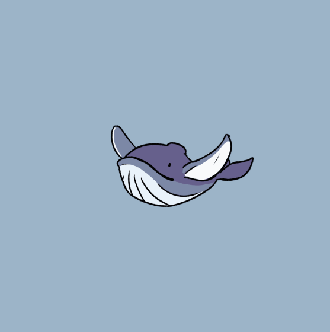

Fund The
Whale
The king of the sea has arrived. The Whale is eagerly seeking the world’s best digital assets in the world. The Whale is the first project aimed at to providing calm and stability to those navigating the often unpredictable world of NFTs. The objective of this 10K NFT project is to create the first ever NFT fund society managed by experienced traders and researchers. In this society, community members will be recognized as professional whale NFT hunters. Come and join the Whale team in the next generation of Defi systems in the crypto world.
